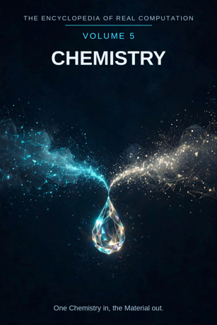

Chron.
The Encyclopedia of Real Computation

One Chemistry in, the Material out.
Home domain: Physics
One Chemistry in, the Material out.
◉ A Principle .... Chemistry ◎ B Purpose ...... Reaction ◉·◉ A.A Alpha ...... the Chemist ◉·◎ A.B Cross ...... the Compound △ X Primitive .... Elements ⚙ Y Protocol ..... Bonding ⬢ Z Product ...... Substances ◐ i State ........ Separation ⚖ j Condition .... Stability ⊞ N Set .......... the Groups ◷ h Time ......... the Duration ▣ C Context ...... the Laboratory ▦ D Domain ....... the Bench ♥ E Emotion ...... Fascination ➤ F Intention .... Synthesis ↻ pi Cycle ........ the Process ➔ phi Step ......... the Stage ⚄ e Probability .. the Yield • h-bar Planck ..... the Atom
Σ sigma Summation .. the Periodic Table
◈ gamma Scale ...... the Scale Δ delta Change ..... Transformation ⁂ sigma' Options ... the Compounds Ω Omega Answer ..... the Material
Every volume of this encyclopedia does the same work. The Prologue figures the subject whole. Then come twenty-four chapters, one per term, each doing four jobs in plain English: what the term means, where it sits in the computation, how it works on the volume's one running example, and what breaks without it. Then the Data, whole. Then the Crossings. Then the Sum. The running example of this volume is water, made from two gases: hydrogen and oxygen, two invisible gases that burn, joined by a spark into the liquid the whole world runs on - and split apart again by a current, to prove what it is.
Chemistry: the study of what things are made of and how they change into other things. Reaction: the event at the centre of the field - substances meeting and coming out different from how they went in.
◉ Chemistry. ◎ Reaction = the root of Chemistry: aimed at itself,
chemistry asks what a thing will do when it meets another.
◉·◉ the Chemist: chemistry turned on itself becomes a person who
practises it. ◉·◎ the Compound: chemistry crossed with reaction - the new substance the crossing makes. △ Elements = Chemistry parted over the Groups. ⚙ Bonding = the function of the Elements, the joining applied. ⬢ Substances = Elements times Bonding, the product, once the Compound has carried them through Reaction.
◐ Separation = the root of negative Chemistry: every substance
carries the possibility of being taken apart. ⚖ Stability = the condition, element by element: a substance stands while its bonds hold. ⊞ the Groups = the set: the families of the Periodic Table, with 118 kinds beneath them. ◷ the Duration: a reaction takes the time it takes. ▣ the Laboratory: where chemistry stands. ▦ the Bench = the Groups crossed by the Study. ♥ Fascination = the difference a landing makes. ➤ Synthesis = the intention that carries a context. ↻ the Process: chemistry returns to its starting materials, purified or spent. ➔ the Stage: one step of a process, completed, checked. ⚄ the Yield: how much of the product the reaction actually gives. • the Atom: the least piece, the smallest portion of an element that is still that element. Σ the Periodic Table: all of chemistry, summed as one table.
◈ the Scale: the size of a working - bench grams or plant tonnes.
Δ Transformation: chemistry's own name for change. ⁂ the Compounds: the spread of substances that could be made. Ω the Material: the answer chemistry resolves into - stuff, known.
IF If Chemistry to Reaction, then Elements & Bonding is Substances, or Separation while Stability for the Groups, through the Duration, in the Laboratory, the Bench, Fascination, Synthesis, at the Process by the Stage, with the Yield over the Atom - sum the Periodic Table, scale the Scale, change Transformation, options the Compounds - therefore the Material.
Stands below, after the chapters, figured whole: the Groups crossed by the Study, thirty-two cells, and the six contexts.
The seven laws, run on this seed. Pythagoras: Chemistry squared plus Reaction squared overlays the Laboratory squared - the triangle checks in the Where, the If, and the Data identically. Law of cosines: the tilt between chemistry and reaction is set by context - on the bench the angle is gentle and the flask is small; in the plant it is nearly flat and the vessel is a tower. Binomial: the middle term is the Compound, counted twice - the elements shape the compound, and the compound, analysed, reshapes what we know of the elements. AM-GM: Reaction is the geometric mean between Chemistry and the One. Log law: the Scale of the Substance is the Scale of the Elements plus the Scale of the Bonding - size adds where work multiplies. Complex modulus: Separation is counted in the size of the field; a substance is known partly by what it can be separated into, and chemistry is larger, not smaller, for saying so. Triangle inequality: no route from Elements to Substances is shorter than the Compound; skip the union and you hold a mixture, labelled as such in the bench notes.
Chemistry begins with the plainest inventory there is: the elements, a hundred and eighteen kinds of stuff, sorted by the Periodic Table into families that behave alike. Its work is the bond - the joining of elements into substances whose character nobody could guess from the parts alone, as two gases that burn become the liquid that puts fires out. The discipline is honest in both directions: it can build a substance up by synthesis and take it apart by analysis, and it trusts a substance only when both roads have been walked. Its yields are printed, not boasted about; its failures stay in the notebook beside its successes. And its finish is the material world itself, understood - every solid, liquid, and gas re-read as elements, bonded, under conditions, for a duration. One Chemistry in, the Material out.
What it means. Chemistry is the study of what things are made of and how they change into other things. It sits between physics below and biology above: physics gives it energy and charge, biology takes its substances and builds life from them.
Where it sits. Chemistry is the Principle of this volume, the seed every other term grows from: Reaction is its root, the Chemist its self-product, the Compound its cross.
How it works. Take two gases, hydrogen and oxygen, and ask the field's central question about them: what are they, together? Everything in this volume is chemistry answering that one question completely - gas by gas, bond by bond - until the answer is a glass of water whose making and unmaking are both understood.
What breaks without it. Every neighbouring volume borrows chemistry's inventory: medicine doses with it, earth science reads rocks with it, biology breathes with it. Remove the Principle and those fields keep their objects and lose the knowledge of what the objects are.
What it means. A reaction is substances meeting and coming out different: bonds broken, bonds formed, and the ledger of atoms balanced exactly - nothing created, nothing destroyed, everything rearranged. Reaction is what chemistry is for: the field exists to say what will happen when things meet.
Where it sits. Reaction is the Purpose, B = the square root of A: chemistry aimed at itself extracts the demand to predict the meeting, not just catalogue the materials. And B squared = A: a reaction fully understood settles back into chemistry itself.
How it works. Hydrogen meets oxygen and nothing happens - until a spark. Then the mixture reacts all at once, with a pop, and the gases are gone: in their place, water. The spark did not make the reaction possible; it made it start. The arrangement was waiting in the gases the whole time.
What breaks without it. Without reaction, chemistry is a warehouse catalogue: elements listed, substances shelved, no account of how any of it becomes any other. A list of stuff is not yet a science of stuff.
What it means. The chemist is chemistry embodied: a person in whom the field's standards have become reflexes - what a smell warns of, what a colour change announces, which mixture must never be sealed in a bottle.
Where it sits. The Alpha, A times A: the field turned on itself. The same substance held by a novice and by a chemist differs in the company it keeps: the novice holds a liquid; the chemist holds its history, its hazards, and three ways to make it.
How it works. Hand the two gases to a beginner and he sees two balloons. Hand them to a chemist and she sees a ratio - two volumes of hydrogen to one of oxygen - an energy waiting, and a product she can predict to the drop. The holder is the difference.
What breaks without it. Unowned chemistry is a book of recipes nobody can safely extend: substances without a knower are a storeroom with the lights off.
What it means. The compound is the interaction term: chemistry crossed with reaction, the new substance that exists only because elements were joined. A compound is not a mixture - its properties are its own, not an average of its parents'.
Where it sits. The Cross, A times B, counted twice: the elements shape the compound (which elements, in what ratio), and the compound reshapes the elements' story (oxygen the burner becomes oxygen the quenched, inside water).
How it works. Water is the cross made visible. Hydrogen burns; oxygen makes things burn; the compound of the two puts fires out. Nothing in either gas announces the liquid. That surprise
- lawful, repeatable, and still startling - is the cross at
work.
What breaks without it. With either factor at zero - elements with no joining, or joining attempted on nothing - the product is zero and nothing new exists. The compound is where chemistry creates what nature had not already shelved.
What it means. Elements are the primitive material: the kinds of atom that cannot be broken down into simpler stuff by any chemical means. One hundred and eighteen are known; every substance on earth is these, combined. An element makes no claim by itself; it is the clay.
Where it sits. X = A times N: the Principle spread across the Set. Each group of the table receives chemistry as its own elements - the gases, the metals, the salts-in-waiting.
How it works. The example begins as two elements: hydrogen, the lightest, one proton, born to bond; oxygen, the great combiner, which takes two electrons from almost anyone offering. Nothing has been claimed yet except that both are elements and their meeting is worth staging. The meeting is the volume; the clay is these.
What breaks without it. No primitives, no products: a field with nothing elementary to work has only substances, and substances cannot be explained from inside themselves.
What it means. Bonding is what joins atoms: electrons shared between neighbours, or handed over outright - the sharing and the handing-over are the two great bond types, and every substance is one or the other, or a weave of both.
Where it sits. Y = f(X), with f the root of Reaction: the working is governed by the purpose - bonds are described because they carry toward predicting the reaction, not merely toward drawing the picture.
How it works. In water, each hydrogen shares its single electron with the oxygen, and the oxygen shares back: two shared pairs, two bonds, one molecule shaped like a wide V. The sharing is unequal - oxygen pulls harder - and that small unfairness is why water dissolves, freezes strangely, and carries life. The protocol ran ahead of the properties, as good protocol should.
What breaks without it. Elements without bonding stay a crowd: everything present, nothing joined. Bonding is the field's hands.
What it means. A substance is matter with a definite nature: this composition, these properties, the same in every sample ever drawn. Substances are chemistry's load-bearing walls - the things recipes, medicines, and materials are made from.
Where it sits. Z = X times Y: the product, area-shaped - it has the character its factors give it, and it can always be factored back for audit: which elements, which bonds, which reaction.
How it works. The gases' product is one substance: water - liquid at room warmth, boiling and freezing at its famous marks, identical whether it was synthesised in a laboratory this morning or fell as rain before there were laboratories. The product can be audited by separation: pass a current, and the two gases come back, two volumes to one, exactly the elements that went in.
What breaks without it. Joining that never sets into substance is weather, not chemistry. The substance is where effort becomes material.
What it means. Separation is chemistry's shadow: the standing possibility that anything joined can be taken apart - by heat, by current, by a greedier partner. It is not the enemy of the bond; it is the bond's audit, and the field's main way of finding out what things are.
Where it sits. i = the root of negative A: the state of the principle itself, counted in the field's size by the modulus law. The shadow is not outside chemistry; analysis is half its method.
How it works. Water carries its separation inside it like a return ticket. Electrolysis cashes the ticket: at one wire, hydrogen, at the other, oxygen, in the exact two-to-one of the making. The synthesis said what water is; the separation proves it, element by element, before witnesses.
What breaks without it. A chemistry that could not take things apart would have to take every substance on faith. Naming the shadow - and using it daily - is what lets the field trust its light.
What it means. Stability is the condition a substance stands under: the range of heat, pressure, company, and time inside which it stays itself. Every substance has such a range, and printing it is part of describing the substance honestly.
Where it sits. j, the Condition: the root taken element by element. This substance stands while its bonds hold, under these conditions; change the conditions far enough and the same substance is a reaction waiting. Verification here is granular: this bond, this temperature.
How it works. Water is stable across the whole of ordinary life - that is its fame. Push it past two thousand degrees and it begins to come apart on its own; keep it at the bench and it outlasts the bench. The chemist can state both facts in one breath, because the condition is part of the fact.
What breaks without it. Unstated conditions are smuggled surprises: the substance that was "safe" meets a hotter day and teaches the lesson itself, at field prices.
What it means. The groups are the families of the Periodic Table: columns of elements that behave alike because their outer electrons are arranged alike. Eight great families are figured in the Data - alkali metals, alkaline earth metals, transition metals, the boron and carbon groups, the chalcogens, the halogens, the noble gases - with 118 kinds beneath them.
Where it sits. N, the Set - the term everything is counted in: elements are A times N, the domain is N crossed by the Study, the sum runs over N. The set is complete as this volume defines it and open underneath; new kinds are still made in laboratories and take their numbered places.
How it works. The example's two elements stand in different families: hydrogen at the table's head, oxygen among the chalcogens, the oxygen group. Their family characters explain the meeting before it happens - the field reads the set the way a musician reads a key signature.
What breaks without it. Unsorted elements are a junk drawer of a hundred and eighteen surprises. The groups are what turn surprise into expectation - the table is the set, and the set is the field's memory of every element's manners.
What it means. The duration is the time a reaction takes, and chemistry is blunt about it: some reactions are over in a flash, some take centuries, and the difference is part of the reaction's identity. Rust is a slow fire; the pop of the gases is a fast one; both are the field's business.
Where it sits. h, Time: the passage the whole figure moves through. A reaction stated without its duration is a journey stated without its length - true as far as it goes, and not far enough to use.
How it works. The two gases can sit mixed for years and do nothing; sparked, they are water in a thousandth of a second. Same elements, same product, two durations differing by ten orders of magnitude. The duration was not a detail of the example; it was the example's drama.
What breaks without it. Chemistry without its time term would predict that iron bridges are impossible (they rust) and that gas mixtures are safe (they wait). Both errors are expensive; the term exists so the field makes neither.
What it means. The laboratory is where chemistry stands: its base context - a room built for the field, with benches, glassware, ventilation, and rules, in which reactions too dangerous or delicate for the open world can be run small and watched closely.
Where it sits. C, the Context, first of the setting terms: contexts transform the domain (the table stands in the Data), and the difference a context makes is measured by Fascination, the next part's first term.
How it works. Water made in a flask is the same water as rain; but in the laboratory its making can be staged drop by drop, weighed, timed, and reversed - the context does not change the substance, it changes what can be known about the substance, which is the only change this encyclopedia ever claims for a context.
What breaks without it. Context-free chemistry is cookery with better glassware: things happen, nothing is staged, and no result can be repeated by a stranger - the death of the field's whole method.
What it means. The bench is chemistry's whole territory: the groups crossed by the study - every family in its four movements, from the question it asks to the teaching it hands on. The full table stands in the Data, thirty-two cells, every one figured, with the 118 kinds standing beneath the families.
Where it sits. D = N crossed by R: the set by the study. A group becomes territory only when the study moves across it; the domain is a crossing, never a list.
How it works. Read the example's own path across the bench: oxygen's family is asked its question (what does it want? two electrons), settles its fact, reaches its understanding, and hands on its teaching - and hydrogen's row answers from the other side. The territory is one land; the example has walked two of its rows and met at the crossing.
What breaks without it. Groups without a domain are eight solitudes, each hoarding its manners. The bench is where the families are studied as one commonwealth.
What it means. Fascination is the difference a result makes when it lands, measured the chemist's way: the intake of breath when a colour changes, a metal burns on water, a clear liquid turns another clear liquid to gold-coloured solid. The field runs on it more than it admits; it is the reward schedule that keeps benches staffed.
Where it sits. E, Emotion: the difference between contexts, C1 minus C0. Before the spark, the mixed gases are a rumour of danger; after it, the room has changed - water on the glass, silence where the pop was - and the size of the change is this term.
How it works. Two invisible gases disappear and a liquid appears: nothing in the senses prepared the beginner for it, and the small violence of the pop makes the lesson unforgettable. Working chemists still stage this reaction for visitors after decades of staging it. The disproportion is fascination, felt.
What breaks without it. Two demonstrations of one reaction are logically equal and humanly unequal: the flat one is endured, the fascinating one is remembered and retold. A field that cannot feel the difference trains hands and loses hearts.
What it means. Synthesis is chemistry's intention: the deliberate building of a substance that did not exist in the materials cupboard - not finding, making. It is the field's forward gear, the operation by which chemistry stops being a commentary on nature and becomes an author.
Where it sits. F, Intention: the operator that carries contexts - C1 = C0 + F. Apply synthesis and the same bench becomes the kitchen's recipe, the pharmacy's remedy, the works' product. What survives the carrying is the substance; what is shed is the glassware.
How it works. Making water from its gases is the simplest synthesis there is, and already it shows the intention's whole character: choose the elements, set the ratio, supply the start, collect the product. Every medicine and material in the Data's world is this same four-step intention, elaborated.
What breaks without it. Unsynthesised chemistry can only describe the world's given substances: a closed catalogue, however elegant. Synthesis is why the catalogue is now longer than nature's own.
What it means. The process is chemistry's cycle: a sequence of stages arranged to run, and run again - charge the vessel, react, separate, purify, and return the unspent materials to the start. Industry is this cycle with plumbing; the bench version is the same shape at arm's length.
Where it sits. pi, the Cycle: the loop the figure runs, turning by stages. The cycle is also the field's honesty policy: anything that does not come round - the waste, the loss, the byproduct - shows up at the loop's seam, where it must be accounted for.
How it works. The example's gases can be cycled indefinitely: join them into water, split the water back into gases, join again. Nothing is consumed by the round itself except the energy supplied - the materials return entire. The example is a perfect small process, which is why teachers reach for it first.
What breaks without it. A one-way chemistry would be all bonfires: reactions run once, products scattered, nothing recovered. The process is how the field learns to run a reaction the way a mill runs a wheel.
What it means. A stage is one completed step of a process: mixing done, heating done, separating done - each finished, checked, and stood on before the next begins. Chemistry climbs by stages the way knowledge climbs by lessons.
Where it sits. phi, the Step: the advance at the cycle's turn. In the grammar, the cycle turns by the step - at the Process by the Stage. Too small and the work drowns in fuss; too large and two reactions happen at once and neither can be read.
How it works. The water synthesis has its stages in plain view: measure the gases, mix them, spark, condense, test. Miss the measuring stage and the yield cannot be known; rush the test and you have a liquid you hope is water. The stages are where the care is stored so the result can be plain.
What breaks without it. Processes delivered as single gestures succeed or fail whole, like spells. Stages are how a reaction stays repeatable by strangers.
What it means. The yield is how much product a reaction actually gives, against how much the arithmetic promised. It is chemistry's probability term wearing overalls: not the odds of a claim, but the honest fraction of the promise kept - and the field prints it on every recipe it respects.
Where it sits. e, Probability: with the Yield over the Atom - every batch carries its fraction beside it. A yield of ninety per cent is a good reaction and a confession at once: a tenth of the material went somewhere else, and the notebook should say where.
How it works. Join the gases in exact ratio and the yield of water approaches the whole promise - this example is one of the field's clean cases. Let the ratio stray and the leftover gas is the yield's shortfall made visible, measurable, instructive.
What breaks without it. Without the printed yield, recipes read as promises and shortfalls read as mysteries. The term keeps the field's books honest at the level of the single batch.
What it means. The atom is the least piece of chemistry: the smallest portion of an element that is still that element. Cut gold smaller and smaller and it is gold until the atom; below that, it is parts of an atom, and the gold is gone. The atom is the floor the whole field stands on.
Where it sits. h-bar, the Planck term: the smallest resolution of the figure. The Sum of this volume is taken at the atom's grain - Omega's limit as the least piece shrinks: chemistry's total is defined over atoms, counted in moles when the counting grows large, all the way down.
How it works. The example is built on the least piece from its first line: two atoms of hydrogen, one of oxygen, one molecule of water. The ratio two-to-one that governs the gases by the balloon governs them by the atom as well - the smallest standard there is, obeyed at every scale.
What breaks without it. No atom, no accounting: reactions could not be balanced, ratios could not be exact, and the field's ledger - nothing created, nothing destroyed - would have no units to be kept in.
What it means. The periodic table is chemistry summed: all the elements, laid out by their number and their manners, in one arrangement where position itself carries knowledge - every element's neighbours predict its behaviour before it is tested.
Where it sits. sigma, Summation: the total taken over the Set, whole, every group, none sampled. It is the inverse of the parting that made Elements - the field breathes out into substances and in into one table.
How it works. The example's two elements are found on the table in seconds by anyone taught to read it: hydrogen at the head, oxygen in its family column, their ratio and their bond already implied by their addresses. The table is the example's index and its explanation at once.
What breaks without it. Unsummed chemistry is a hundred and eighteen separate surprises, each element a private biography. The table was built, painfully, out of exactly that chaos.
What it means. The scale is how large a working is, in reach: a reaction run in a test tube, a vat, or a plant that fills a valley. Scale in chemistry is not just size - heats, mixings, and dangers change their character as the batch grows, and the scale term is the field's warning label about its own numbers.
Where it sits. gamma, Scale: the translator of the figure. By the log law, the scale of the product is the scale of the elements plus the scale of the bonding - which is why a bench reaction, scaled carelessly, can reach a magnitude nobody ordered.
How it works. A thimbleful of the gas mixture pops; a roomful would take the roof. Same reaction, same ratio, two magnitudes
- and the example teaches the scale term more plainly than any
definition: in chemistry, quantity has a quality all its own, and the chemist quotes both, always.
What breaks without it. Read at one magnification, the field cannot tell its demonstrations from its disasters, and learns the difference at the price the difference charges.
What it means. Transformation is change itself, and it is chemistry's home subject: the one field whose whole business is things becoming other things. It earns the delta twice over - it is the closing run's change-operator, and it is what every chapter before this one was secretly about.
Where it sits. delta, Change: applied in the closing run after the sum and the scale are known - change read in full view of the whole. In the field itself, delta is also revision: when the table's arrangement proved wrong in a corner, the field re-drew it, and the re-drawing is commemorated in the table's own history.
How it works. The example is one transformation stated whole: two gases in, one liquid out, energy released, atoms conserved. Every transformation in the field is this sentence with different nouns - which is why the sentence is worth twenty-two chapters of care.
What breaks without it. A chemistry without its change-term would be a museum of substances, each labelled and none becoming: the field's delta is its difference from a catalogue.
What it means. The compounds are chemistry's open spread: the substances that could be made - a space so large it dwarfs the catalogue of the made. Millions of compounds are known; the possible ones, from 118 elements in combination, outnumber the stars anyone will ever count.
Where it sits. sigma-prime, the Options: last before the Answer, by the book's discipline. No answer in this encyclopedia is read until its spread has been shown; a substance printed without its neighbouring possibilities looks more final than the field is.
How it works. Water is one compound of two elements out of the myriad those two families open: the same oxygen gives rust, breath, stone, and blood their chemistries, and hydrogen joins nearly everything. The example is a door, and this chapter is the corridor behind it - medicines, materials, and dyes not yet made by anyone.
What breaks without it. Hide the spread and the field presents itself as finished - a storeroom where a frontier should be. The compounds are chemistry's capital: the named shape of its next century.
What it means. The material is what chemistry resolves into: the world of stuff, known - every solid, liquid, and gas re-readable as elements bonded under conditions, its makings and unmakings both on record. It is the least mysterious kind of answer and the most useful: the stuff stays stuff, and now it is understood stuff.
Where it sits. Omega, the Answer: the limit of the whole figure, and its door back - the material shows the next compound (Chapter 23 keeps them ready), the compound roots the next chemistry. The volume closes where the field reopens.
How it works. The example's answer is a glass of water that can be made from air's cousins and unmade by a battery, its ratio known, its bonds drawn, its conditions printed. From that one settled substance, medicines are dosed, engines are cooled, and the next volume's rivers are read. A chemist in this answer is not finished; she is equipped.
What breaks without it. Without a resolution, the computation turns and never lands: elements listed, bonds drawn, reactions run - and no point at which the field may say "this much is stuff, known" and build. One Chemistry in, the Material out.
The Study runs in four movements: the QUESTION the family asks, the FACT it settles, the UNDERSTANDING it reaches, the TEACHING it hands on. Beneath the eight families stand the 118 kinds, each at its numbered place in the table.
ALKALI METALS ..... Question: the Vigour - Fact: the Soft Metal -
Understanding: the Lone Electron - Teaching: the Oil Jar
ALKALINE EARTH .... Question: the Hardness - Fact: the Two Electrons -
Understanding: the Pair Given Away - Teaching: the Flame Test TRANSITION METALS . Question: the Colour - Fact: the Many Charges - Understanding: the Flexible Shell - Teaching: the Catalyst
BORON GROUP ....... Question: the Odd One - Fact: the Three Electrons -
Understanding: the Halfway House - Teaching: the Glass
CARBON GROUP ...... Question: the Backbone - Fact: the Fourfold Bond -
Understanding: the Middle Way - Teaching: the Diamond and the Pencil
CHALCOGENS ........ Question: the Breath - Fact: the Two Wanted -
Understanding: the Near-Complete Shell - Teaching: the Rust
HALOGENS .......... Question: the Hunger - Fact: the Salt-Makers -
Understanding: the One Short - Teaching: the Bleach
NOBLE GASES ....... Question: the Silence - Fact: the Full Shell -
Understanding: the Complete Set - Teaching: the Lamp
THE LABORATORY (base) ... Emotion Fascination, Intention Synthesis gives THE BENCH.
THE KITCHEN ............. Emotion Hunger, Intention Cooking
gives THE MEAL.
THE PHARMACY ............ Emotion Care, Intention Compounding
gives THE REMEDY.
THE WORKS ............... Emotion Industry, Intention Scaling
gives THE PRODUCT.
THE FARM ................ Emotion Patience, Intention Feeding
gives THE FERTILIZER.
THE HOUSEHOLD ........... Emotion Comfort, Intention Keeping
gives THE CLEANING SHELF.
This volume's roads to its siblings. To VOLUME 1: every term of this volume holds an address on the great grid, under the Physics home domain, and the Knowledge volume's Fields chapter prints chemistry's row - the Mixture, the Compound, the Bond, the Synthesis. To VOLUME 4 (Physics): bonding is energy bookkeeping there; the spark that starts this volume's reaction is that volume's falling stone, converted. To VOLUME 6 (Earth Science): rocks are this volume's substances at geological duration - the cliff is a slow bench. To VOLUME 9 (Medicine): the remedy of the Data's pharmacy is that volume's whole subject, dosed. To VOLUME 8 (Biology): water, the running example, is the medium every living cell is suspended in. Every term's full address stands in Volume 18.
THE TALLY LANE: 8 groups - 118 kinds beneath them - 32 domain cells - 6 contexts - 24 chapters - 1 running example, made and unmade entire. THE SIGMA LANE: read whole, the volume sums to +1: one chemistry, entire, its shadow counted and its spread shown.
ITS OPEN QUESTIONS (sigma-prime, carried to Volume 18): the compounds not yet made, which outnumber the made - whether any element beyond the 118 can hold together long enough to name - how far synthesis can go toward building substances nature never attempted - and the standing question of the bench: what this mixture will do, asked fresh every morning.
One Chemistry in, the Material out.
ADDRESS INDEX: this volume's terms stand at the Physics home domain of the great grid; full addresses in Volume 18. GLOSSARY: mixture - substances mingled, not bonded, separable by simple means. catalyst - a substance that speeds a reaction and is not consumed by it. yield - the fraction of the promised product actually obtained. noble - in this volume, complete: wanting nothing, bonding with nothing. ICON TABLE: stands at the front of this volume, and of every volume, identical.